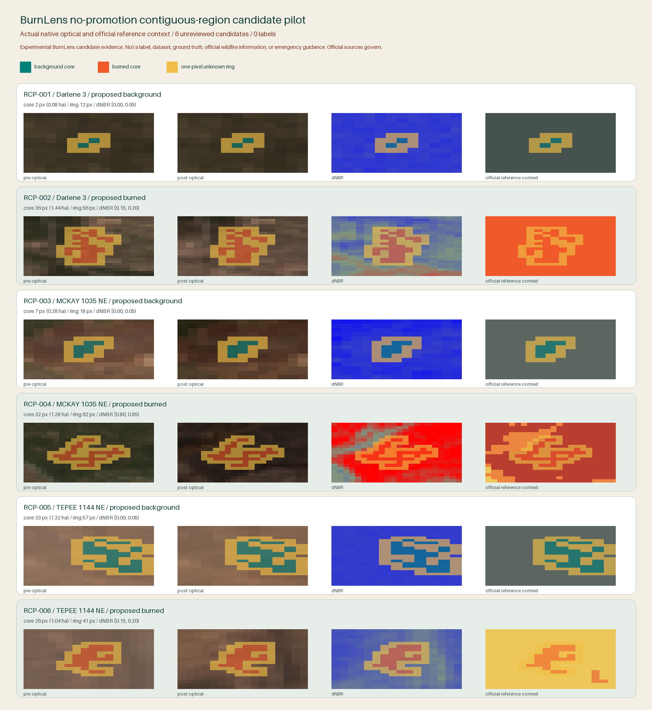

Experimental BurnLens candidate evidence. Not a label, dataset, ground truth, official wildfire information, or emergency guidance. Official sources govern.
Rendered evidence

Candidate inventory
| ID | Event | Proposed class | Core px | Core ha | Ring px | dNBR bin | Output |
|---|---|---|---|---|---|---|---|
| RCP-001 | Darlene 3 | background | 2 | 0.08 | 12 | [0.00, 0.05) | candidate raster |
| RCP-002 | Darlene 3 | burned | 36 | 1.44 | 56 | [0.15, 0.20) | candidate raster |
| RCP-003 | MCKAY 1035 NE | background | 7 | 0.28 | 18 | [0.00, 0.05) | candidate raster |
| RCP-004 | MCKAY 1035 NE | burned | 32 | 1.28 | 62 | [0.80, 0.85) | candidate raster |
| RCP-005 | TEPEE 1144 NE | background | 33 | 1.32 | 57 | [0.00, 0.05) | candidate raster |
| RCP-006 | TEPEE 1144 NE | burned | 26 | 1.04 | 41 | [0.15, 0.20) | candidate raster |
Frozen generator
same frozen five-state class, eligible quality/registration state, exact categorical reference context, and fixed 0.05 dNBR bin. The one-hectare target selects among intact components only; it never clips or expands them. Any overlap or grid-edge truncation fails closed.
Generator region-candidate-generator-v0.1.0 / run BL-2026-07-18-region-candidate-pilot-r006 / source 407981e1f98570bb8bd7695951d6cc5d67dab042.
Decision
PILOT_REGION_CANDIDATES_REVIEWABLE_KEEP_PROMOTION_CLOSED
Validate rendered/runtime and exact reconstruction; only a later separately versioned owner-review surface may collect yes/no/uncertain decisions.
Limitations
- The 0.05 dNBR partition is a frozen pilot evidence-coherence parameter, not a universal burn or severity threshold.
- The one-hectare target affects seed selection only and has no label or ecological meaning.
- The same historical proposal logic helps define and display these regions; this is not independent ground truth.
- Only three events are represented, so event diversity and dataset fitness remain blocked.
- Candidate evidence may still be rejected or marked uncertain by the owner in a later workflow.